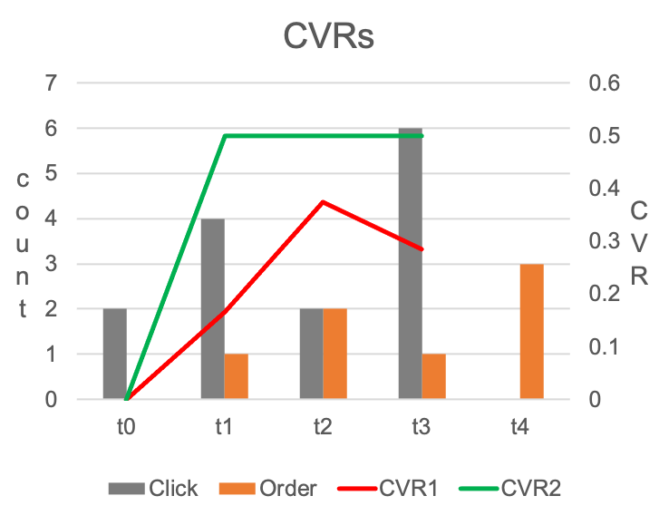
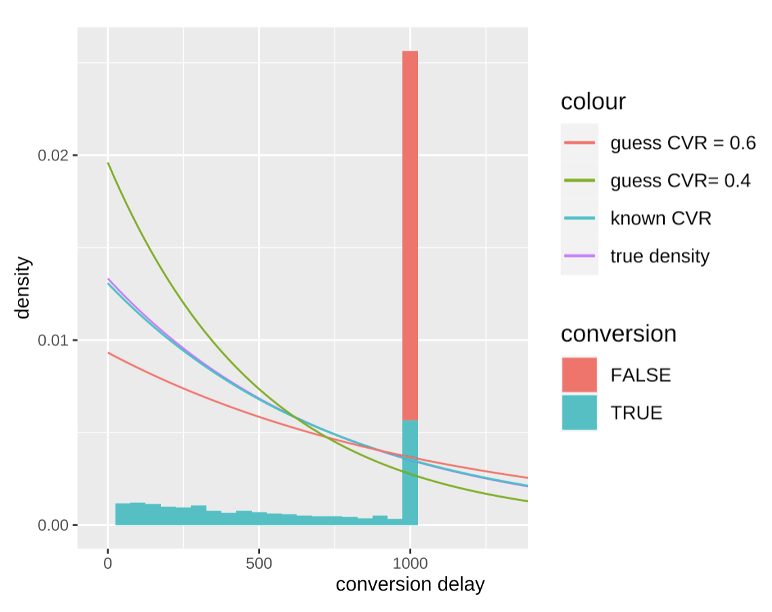
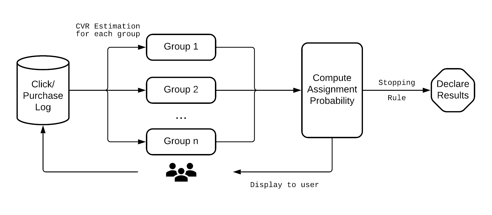
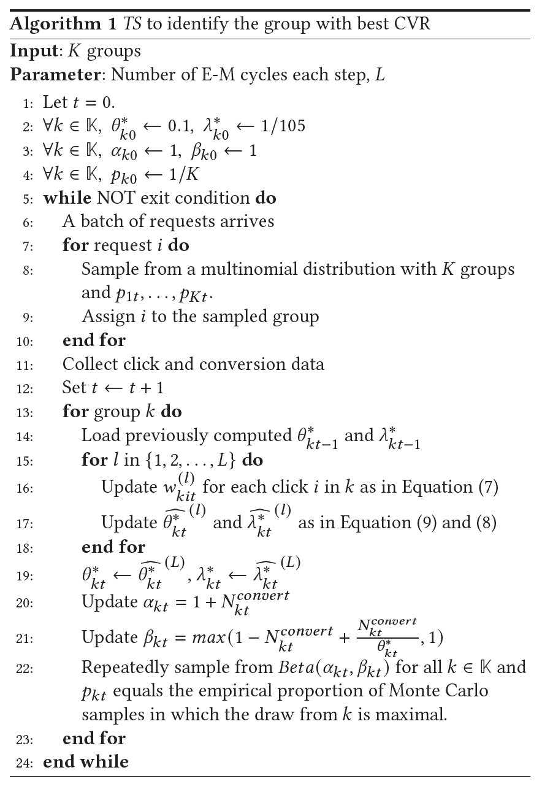

How to use CVR as an objective in multi-armed bandit experiments
This article draws on our published paper in the Web Conference 2022
 Photo by
Mitchel Boot
on
Unsplash
Photo by
Mitchel Boot
on
Unsplash
Intro
Multi-armed bandit (MAB) has become an increasingly important tool for experimentation and has been widely adopted by the industry giants such as Google, Meta, Netflix, LinkedIn, etc. to conduct efficient experiments. However, widely-used MAB test designs require the objective of interest to provide instantaneous feedback in order to update the assignment probability to each variant. This is why most of the tutorials you can find for running MAB experiments are probably using Click-through rate (CTR) as an objective.
So in this article, I want to show you how to run a multi-armed bandit experiment for objectives that take significant delays to materialize such as conversion rate (CVR).
Why Multi-armed Bandit Experiments?
Suppose you are running an online advertising campaign and trying to find the best graphic design that brings the highest conversion rate to your product, you will need to conduct an experiment.
You can run a classical A/B/n test, assign a fixed portion of users to the competing designs, and then conduct an analysis after collecting enough data. However, there are two common problems that A/B/n testing is often criticized for. And those problems are more prominent when dealing with delayed metrics like CVR because it will take longer to finish the experiment.
-
Large experimentation costs. Because all the competing treatments in the A/B/n test are guaranteed a fixed portion of the sample size, even a “bad” treatment can be exposed to a significant amount of users and it could be hurtful to the user experience. A longer experiment means even larger experimentation costs.
-
Prone to erroneous decisions if not analyzed correctly. The A/B/n tests are designed to be analyzed only when the targeted sample size is reached. But inexperienced and impatient experimenters are often inclined to peek at results and make decisions before the experiments, which could lead to erroneous conclusions. See this blog for more discussion . Running a longer experiment creates more opportunities for mistakes.
Here comes our hero, the multi-armed bandit paradigm. In this paradigm, we view our competing ad designs as many different slot machines. Each slot machine has its own rate of success (conversion). We want to find the slot machine with the best rate and then keep pulling its arm. A MAB algorithm will provide a principled way to iteratively adjust the assignment ratio throughout the experiment until the best treatment receives the majority of the sample.
MAB has the advantage of reducing the opportunity costs from the experimentation and is immune to peeking.
The Problem with Computing CVR
Now you might wonder, MAB sounds good and all, but what’s special about the CVR?
Conversion rate is a very common and important metric used in the industry. But unlike click-through rates, conversion signals are sparse and often delayed. For example, an e-commerce website user may not complete their order hours or even days after they first start browsing. And such uncertain delays will cause us trouble.
In this article, we follow the standards of the online advertising industry to define CVR as the percentage of the clicks that lead to a conversion (a purchase for example).
Naive CVR
$$CVR_{naive} = \frac{total\_conversion_{t}}{total\_click_{t}}$$
This is what people normally use in the industry. The problem with this CVR formula is that at any time we compute its value, we are missing all the conversions that are delayed and have not been observed yet. So this naïve CVR will underestimate the real CVR.
We can see this in the following example. 
In this simple experiment, we simulate a situation where the real CVR equals 0.5, and assume all the conversions are always delayed by 1 hour after the click. Obviously, in practice, the conversion delay will not be this simple, but the same logic in this example applies.
To compute naïve CVR at $t_2$ for example, we need to add all the orange bars as the numerator and add all the grey bars as the denominator. The computed naïve CVR is represented by the red line in the graph. Clearly, it’s underestimating the real CVR.
The code below creates a more generalized simulator. It generates conversions with an exponential delay distribution and keep tracks of the observability of the conversion over time. This simulator can be used to test our Bandit code later.
Corrected CVR
One way to correct the underestimation in our example above is to use only grey bars from $t_0$ and $t_1$ as the denominator when computing CVR at $t_2$. Then, the modified CVR estimation equals 0.5, which is the underlying truth.
The reason this remedy can work is that, we know none of the clicks at the $t_2$ has any chance to generate a conversion at $t_2$ (their corresponding conversions can only be observed 1 hour later). So those clicks at $t_2$ should not be included in the denominator. The green line in the graph is computed using this idea, and recovers the real CVR after $t_0$.
This approach can generalized to the more complicated case where the delay is stochastic and follows a general delay distribution (whose CDF is denoted as $\tau$)
$$CVR_{corrected} = \frac{total\_conversion_{t}}{effective\_click_{t}}$$
$$effective\_click_{t} =\sum_{s=1}^{t}N_s \tau_{t-s}$$
$$\tau_{t-s} = P(D_s\leq t-s)$$
Simply speaking, we want to reweight the clicks to compute the effective clicks, and the weight of a click is based on the probability that its conversion is observed from the click till now. The more recent clicks will receive less weight.
This formula can be proved to be an unbiased estimator if the delay distribution is known.
Challenges in Estimating the Delay Distribution
In practice, we don’t know what the real delay distribution is. In this section, we discuss the challenges in estimating delay distribution.
During the experiment, the observed delay is right-censored. It means that, if we plot the histogram of the conversion delays, we can not observe delays longer than some threshold. Like the example below,

In this example, we are trying to estimate the delay distribution at $t=1000$, and can only observe conversion delays smaller than 1000.
There is a spike in the graph when delay equals 1000. Those are the clicks that have not been converted yet. There are two possible outcomes for those clicks. Either they will convert in the future, meaning having a delay larger than 1000; or they will never lead to a conversion, equivalent to having an infinitely long delay. Those non-conversions are marked by the red shade in the graph.
We are only interested in estimating the delay distribution for the blue sample. If the red portion can be excluded, the estimation is relatively easy to do (it’s the standard survival analysis). Unfortunately, during an experiment, there is no way to separate those two possibilities, unless we know the real eventual CVR.
But the eventual CVR is what we want to estimate to begin with. We have come full circle!
How to Run MAB with CVR
 An overview of the system we are proposing is presented above. There are two major components related to the algorithm. The first component takes the click and conversion logs as inputs and estimates CVRs for each treatment group in an experiment. The second component computes the assignment probability based on all the estimated CVRs from the first component. If a stopping rule is not met, new ads will be displayed to users according to the assignment probability. Then the process repeats.
CVR Estimation
In the first component, we use the expectation maximization method to get CVR estimation for each experimental group.
First, we assume the delay distribution to be exponentially distributed, parameterized by $\lambda_k$ for each experimental group $k$.
For each group $k$, collect all the clicks in group $k$. First compute the weight for each click $i$
follows
$$w^{(l)}_{kit}=\begin{cases} 1, & \text{if } y_{kit}=1\\ \frac{\widehat{\theta_{kt}^*}^{(l-1)}e^{-\widehat{\lambda_{kt}^*}^{(l-1)}e_{kit}}}{1-\widehat{\theta_{kt}^*}^{(l-1)} + \widehat{\theta_{kt}^*}^{(l-1)}e^{-\widehat{\lambda_{kt}^*}^{(l-1)}e_{kit}}}, & \text{if } y_{kit}= 0 \end{cases}\label{eqn:w_actual_use} $$
then updates the estimates
$$\begin{align} &\widehat{\lambda_{kt}^*}^{(l)}=\frac{N_{kt}^{convert}}{\sum_{i} w_{kit}^{(l)}e_{kit}}\label{eqn:lambda_actual_use}\\ &\widehat{\theta_{kt}^*}^{(l)}=\frac{N_{kt}^{convert}}{\sum_{s=1}^{t}n_{ks}^{click}(1-e^{-\widehat{\lambda_{kt}^*}^{(l)}(t-s)})}\label{eqn:theta_actual_use} \end{align}$$
where
$y_{kit}$indicates whether in group$k$click$i$’s conversion has already occurred at time$t$,$e_{kit}$is the elapsed time since the click$i$till time$t$in group$k$if$y_{kit}=0$, and the elapsed time since the click till conversion if$y_{kit}=1$,$\widehat{\theta_{kt}^*}^{(l)}$and$\widehat{\lambda_{kt}^*}^{(l)}$respectively represents the estimated CVR and delay parameter in group$k$at time$t$in the$(l)$th cycle,$N_{kt}^{convert}$is the cumulative conversion in group$k$until time$t$,- and
$n_{ks}^{click}$is the number of clicks in group$k$at the time step$s$.
At each time step $t$, we iterate the above defined E-M computations
for a few cycles to make sure the resulted estimates are stable. Let $L$ represent the total number cycles. Then the final estimates of the each time step, $\widehat{\theta_{t-1}^*}^{(L)}$ and $\widehat{\lambda_{t-1}^*}^{(L)}$ are saved and used as the priors for the next
time step, i.e. $\widehat{\theta_t^*}^{(0)} = \widehat{\theta_{t-1}^*}^{(L)}$ and $\widehat{\lambda_t^*}^{(0)} = \widehat{\lambda_{t-1}^*}^{(L)}$.
The code below provides one example implementation of the process. Each Arm class corresponds to a group described above, and is responsible for getting the relevant log data and get the estimate for $\widehat{\lambda_{kt}^*}^{(L)}$ and $\widehat{\theta_{kt}^*}^{(L)}$.
Thompson Sampling
Once we get the estimated CVR for each group, we can use Thompson Sampling to compute the assignment probability.
In order to use Thompson Sampling, we need to know the distribution of estimated CVR. Since it’s non-trivial to get that from the EM procedure, we take a heuristic approach to assume the CVR of each group $k$ at the time $t$ follows a Beta distribution, $Beta(\alpha_{kt},\beta_{kt})$. The parameters are updated following:
$$\begin{align} &\alpha_{kt}=1+N_{kt}^{convert}\\ &\beta_{kt}=max(1-N_{kt}^{convert}+\frac{N_{kt}^{convert}}{\theta_{kt}^*},1) \end{align}$$
Simply speaking, the $\beta_{kt}$ equals the number of effective clicks + 1.
The assignment probability of a group is the posterior probability that the group offers the highest expected CVR. We compute these values using Monte Carlo simulations.
The code for $\alpha_{kt}$ and $\beta_{kt}$ updating and Beta sampling are embedded in the Arm class above. By invoking the draw_beta_sample method of each arm, we can compute assignment probability as follows.
The following figure summarizes the entire procedure of the method for exponentially distributed delays.

Conclusion
There you have it. Now you can start running your multi-armed bandit experiments with the CVR metric. This article is written based on our paper Adaptive Experimentation with Delayed Binary Feedback . If you want to assume a delay distribution other than exponential distribution or use other types of delayed feedback, you can find more discussion in the paper. For the complete code shown in this article, you can find them HERE .